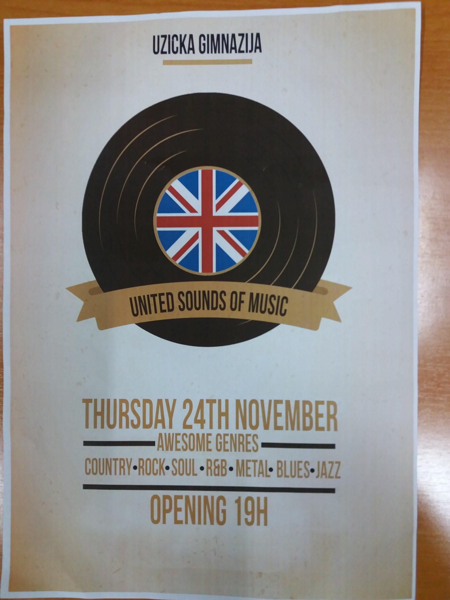
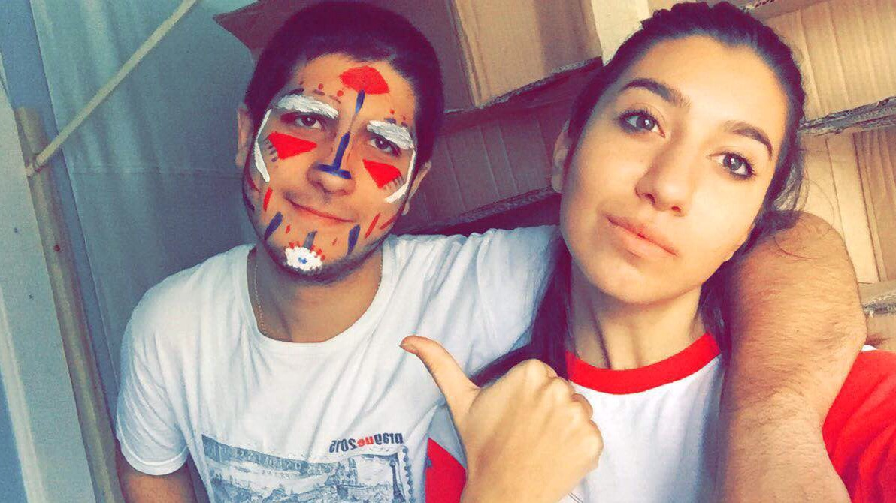
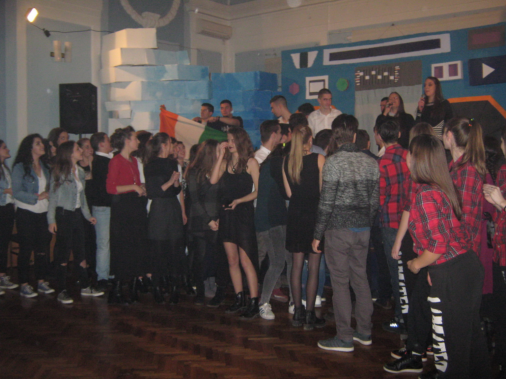
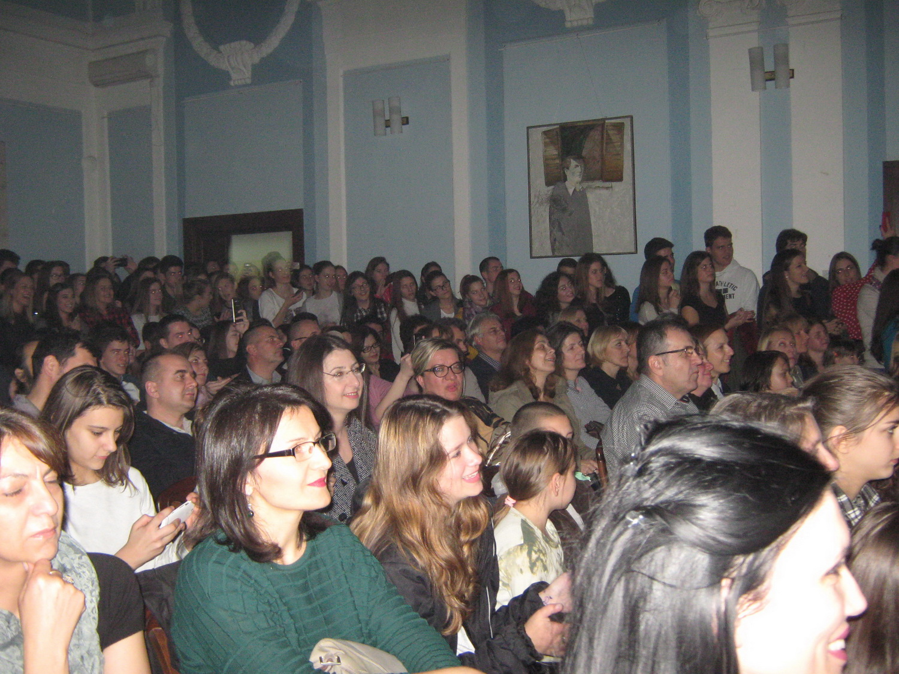
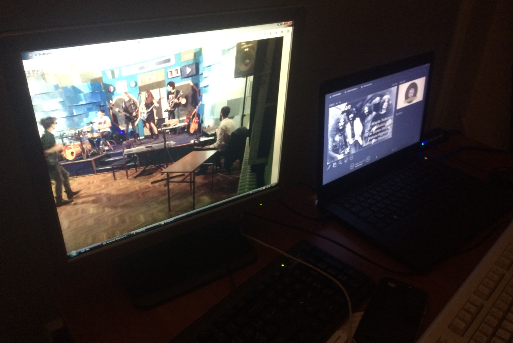
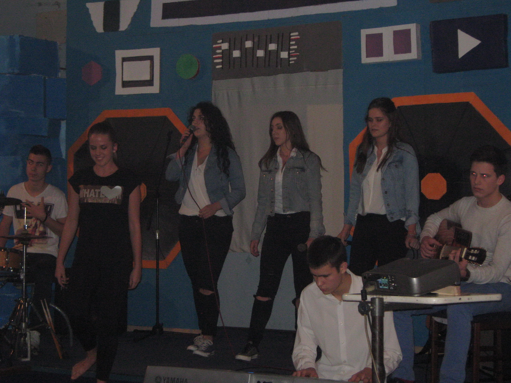
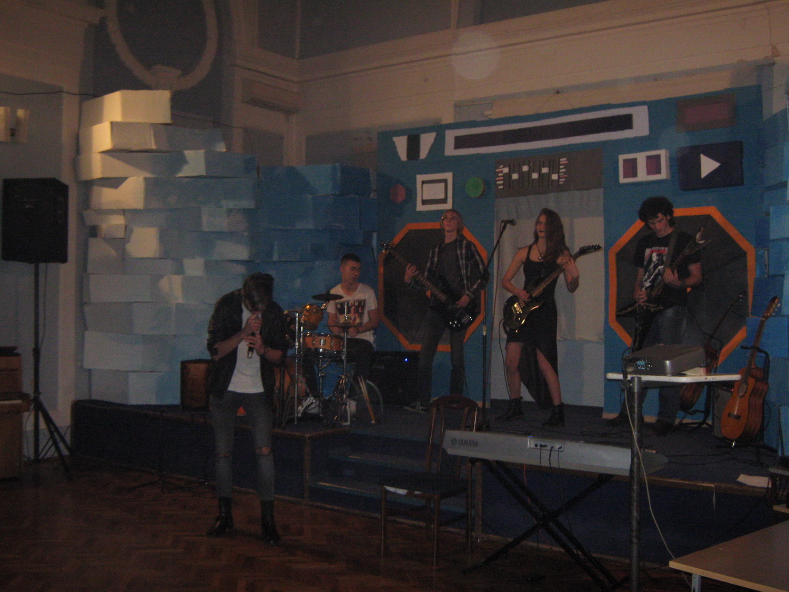

Copyright©
Tomislav Bakic 2016.
Trinaesto po redu veče engleskog jezika u Užickoj gimnaziji održano 24. Novembra 2016, definitivno je pomerilo sve granice prethodnih večeri, barem po broju učesnika. Oko 60 njih radilo je vredno oko dva meseca u ulozi pevača, igrača, scenografa, dizajnera postera i pozivnica producenata, tehničke podrške, članova hora, koordinišući sve samostalno sa minimalnim nadzorom svojih profesora. Organizacija je bila na visokom nivou, sa profesionalnim detaljima i velikom tehničkom pomoći. Nisu svi koji su želeli da pogledaju ovo veče uspeli da udju u premali prostor za dogadjaj ove veličine.
Projekat je bio izvanredna prilika da prikažemo kreativnost i pomerimo granice. Uradili smo nešto što ova škola nikada nije videla. Dizajniranje scene je bilo lako u poredjenju sa procesom pravljenja iste. Uprkos tome proveli smo se neverovatno radeći oboje. Veoma sam ponosna što sam bila deo ovog projekta. Drago mi je što ću imati da se osvrnem na ovako nešto kada napustim srednju školu. Veliko iskustvo!
Od početka smo želeli da naravimo ozbiljno veče koje će ostati zapamćeno. Pažljivo smo ga isplanirali I držali se tog plana. Kada smo počeli nije bilo mnogo ljudi, ali kako je vreme odmicalo broj se povecao. U novembru smo počeli sa scenografijom za koju smo Jelena i ja vec napravili plan. Škola nam je dosta pomogla i dala nam materijal. Proveli smo svaki dan u školi praveci scenu. Veče je bilo fenomenalno. Scena je bila odlična, ljudi su ispunili prostoriju, i muzičari su bili fenomenalni. Pobednici su bili izvodjači metal muzike sa pesmom Ironman. Velika zahvalnica našoj tehničkoj podršci koju čine, Proša Kojo i Zijo. Želeo bih da se zahvalim svima pogotovo članovima žirija i svim učesnicima za odlično veče.

Nakon 15 minuta glasanja I zabavnog dela programa žiri je odlučio. Pobednici su bili "Kratki sa vremenom" u izvodjenju pesme Ironman.
Atmosfera je bila elektricna i vazduh pun ljubavi i uzbudjenja. Ceo dogadjaj je veoma dobro organizovan. Bilo je 12 grupa koje su predstavljale 12 različitih žanrova muzike. Izmedju njihovih nastupa imali smo mogucnost da ogledamo kratke klipove o predstojecem žanru, što je učinilo vreme izmedju nastupa još zanimljivijim. Publika je stvarno bila spremna za žurku, a atmosfera neverovatna. Tri člana žirija su proglasila pobednika. Najbolji deo večeri bio je kada su sve grupe izašle na scenu i započele proslavu. Svi su bili tako srećni i nije bilo bitno ko je pobednik zato što su se svi odlično proveli. Toliko su se zabavljali da smo mi iz publike želeli da im se pridružimo na plesnom podijumu. Još jednom, veče je bilo veoma uspešno i radujemo se sledećem.
Kada pričamo o tehničkoj strani večeri, uopšte nije bilo tako jednostavno. Ovaj put je bilo drugačije od bilo kog dosadašnjeg dogadjaja. Ovo je bio prvi put da je tehnička podrška sedela iza scene, što nam je stvaralo dodatne probleme ali je poboljšalo sveukupni izgled. Deo mog posla bio je pravljenje kratkih klipova za svaki od 12 žanrova i prikazivanje istih pre nastupa. U početku je izgledalo jednostavno ali se ispostavilo da uopste nije tako lako predstaviti ceo žanr sa tri pesme. Još jedan problem bio je sinhronizovanje sa muzičarima prilikom neočekivanih delova kao što su improvizacije u pesmi i produzeni nastupi. Srećom, uspeli smo sve da odredimo i na kraju mogu sa sigurnošću da kažem da smo sa ovim takmičenjem uspeli da podignemo stvari na novi nivo!
Tokom večeri, puštali smo PowerPoint prezentaciju. Moj drug Aleksa i ja smo bili zaduženi za to. Napravili smo prezntaciju koja je sadržala različite snimke i img koji su bili važni za ono što se dešavalo na sceni. Bilo je potrebno dosta vremena da se sve omogući i dosta vežbe da se usavrši tajming slajdova. Na kraju su se vežba i naporan rad isplatili i veče je stvarno bilo jedinstveno iskustvo za celu postavu učesnika i siguran sam da se tako i publika osećala.
Ja sam bila jedan od učesnika u predstavi. Moje prijateljice i ja smo pevale pesmu od Jessie J. -Wild. Veoma sam zadovoljna jer je najbitniji deo priprema za veče bio sam proces, koji je bio veoma produktivan, pomagale smo jedna drugoj u svim delovima, zbližile se i upoznala sam dosta novih prijatelja. Radujem se u učesvovanju još ovakvih projekata.
Prilično sam se zabavila vodeći "Ujedinjene zvukove muzike" i dobila dosta iz tog iskustva. Uživala sam u svemu od proba pa do same večeri. Bilo je neverovatno.

Bio sam veoma uzbudjen zbog učestvovanja u večeri. Pošto sam prva godina ovo je bila odlična šansa da predstavim moj bend "Kratki sa vremenom" celoj školi. Kako smo išetali na scenu osetili smo da smo rodjeni za to. Svi su vrištali, svima smo se svideli. Radujem se unapred večerima ove vrste, ko zna dokle možemo stići.
